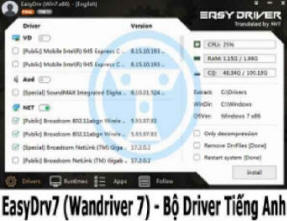

Bộ Offline Wandriver nay đã đổi thành EasyDrv là một công cụ phần mềm cài Driver bị thiếu cho Windows một cách nhanh chóng và hiệu quả, đặc biệt Wandriver 7 được cải tiến mạnh mẽ. Bản rebuild tiếng Anh mới nhất này giúp thao tác dễ dàng và trực quan hơn nhiều so với bản gốc tiếng Trung.